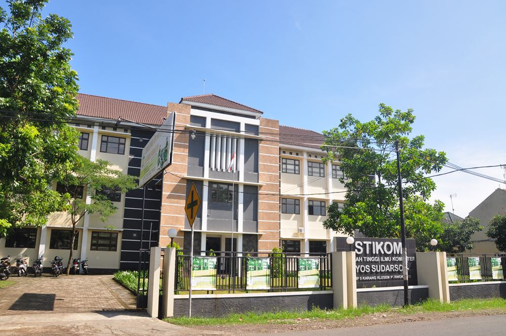

| SIASTIKOM | YOUTUBE | GITHUB | LIBUR_KULIAH | KELENDER_AKADEMIK | PENDAFTARAN |
|  |
Tahun 2015 menjadi Cyber Campus yang humanis, profesional, serta unggul dalam perkembangan Teknologi Informasi yang berwawasan lingkungan.
Kelahiran Sekolah Tinggi Ilmu Komputer (STIKOM) Yos Sudarso tidak lepas dari dua latar belakang. Latar belakang pertama terkait dengan visi misi Keuskupan Purwokerto, sebuah lembaga gerejani yang melayani umat dan masyarakat wilayah Jawa Tengah bagian barat. Lagar belakang kedua terkait dengan perkembangan jaman.
Gereja Keuskupan Purwokerto sebagai salah satu komponen bangsa ini telah mendeklarasikan cita-citanya bahwa dalam kerjasama dengan umat berkeyakinan ingin mempelopori, memperjuangkan dan menghayati nilai-nilai luhur kemanusiaan bagi masyarakat kecil, lemah dan miskin mendapatkan hak-haknya untuk memperoleh pendidikan secara baik. Cita-cita Gereja Keuskupan Purwokerti ini selaras dengan cita-cita para pendiri bangsa Indonesia.
Dari situlah kemudian dilahirkan Sekolah Tinggi Ilmu Komputer (STIKOM) Yos Sudarso melalui Yayasan Karya Perutusan. Sebuah lembaga pendidikan yang ingin memberikan pendidikan yang baik sekaligus bisa memberikan pelayanan kepada mereka yang kecil, lemah, dan miskin untuk mendapatkan haknya.
Disisi lain, masyarakat sekarang telah memasuki jaman teknologi informasi dan komunikasi (information technology and communication atau lebih dikenal dengan nama ITC) yang begitu canggih. Memasuki era globalisasi, ITC telah menjadi kebutuhan penting dalam mencapai visi, misi dan tujuan suatu organisasi. Sumber daya manusia merupakan faktor utama dalam keberhasilan membangun infrastruktur ITC dan knowledge yang tangguh serta selaras dengan proses bisnis organisasi. Hal ini menuntut kesiapan sumber daya manusia dibidang ITC yang sangat mampu menguasai dan beradaptasi degan perkembangan ITC yang sangat cepat.
STIKOM Yos Sudarso dilahirkan untuk memenuhi kebutuhan Sumber Daya Manusia (SDM) yang tangguh dan handal dibidang ITC untuk menjawab tantangan tersebut diatas. STIKOM Yos Sudarso berdiri pada tanggal 19 Juli 2005 berdasarkan Surat Keputusan Mentri Pendidikan Nasional Republik Indonesia nomor: 100/D/O/2005.
Sejalan dengan tuntutan dan pasar kerja dan perkembangan ITC dalam menyiapkan sumber daya manusia yang cerdas, profesional dan humanis dibidang ilmu komputer, maka program studi yang pertama dibuka adalah Program Studi Komputerisasi Akuntansi untuk jenjang pendidikan diploma tiga (D3) dan Sistem Informasi untuk jenjang pendidikan strata satu (S1).
{kind=link}